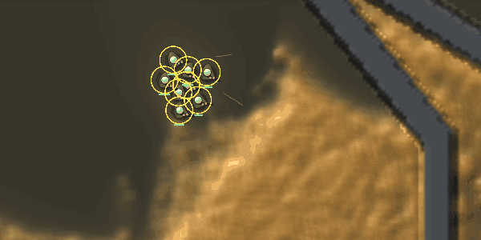
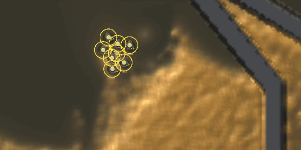
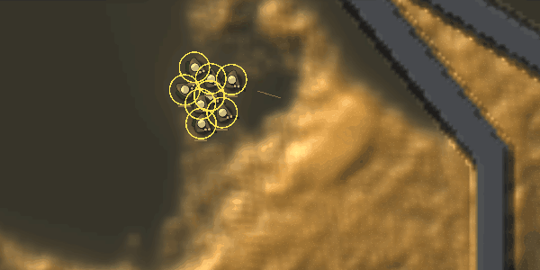
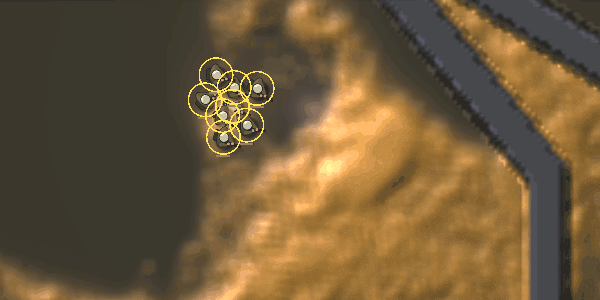
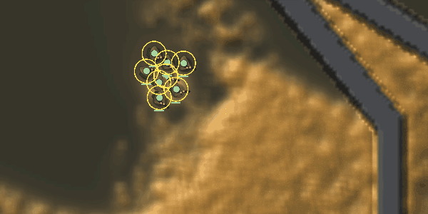
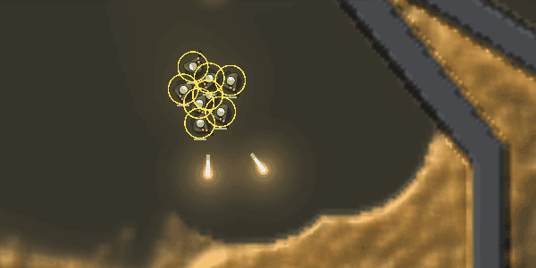
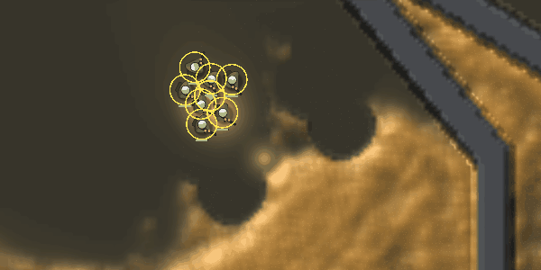
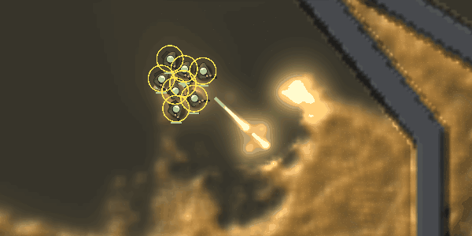
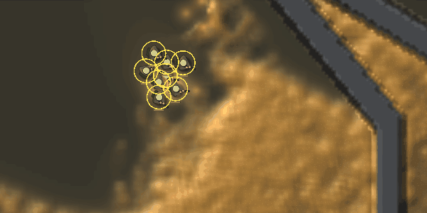

Each bullet is now a light that flies over the real slime. It is drawn along the distance it covers in a frame, in its payload's colour: blast orange, gas violet, germ green. Plain shots, and shots fired while the gun recharges, are pale gold. When a burst goes off, it lights its area for about a tenth of a second. After that, only what it did stays: the hole in the body and the crater. This follows how Noita lights a spell (see the research report). The simulation is unchanged. The before and after films have the same casts and kills, frame for frame.
Fork map, seed 1. Eight soldiers stand at (150, 195) on free fire with 20,000 food banked, so every round can be paid for. Each film runs from 0:19 to 0:22 game time at 15 frames a second, through the window's own view on llvmpipe. The counts under each film cover those three seconds.




The cards change the bullet itself. Wide makes it bigger, with a wider light. Scatter flies three heads. Pierce is a long thin lance. Quiet is dimmer. A lodged cast (delay or thick) glows where it waits, and a delay's glow swells as its fuse burns down.





Game::bullets: where each one is, its heading, and its pierce and split cards. The colour comes from the cast its soldier's next hit makes (Rounds::next_cast).View::set_lights, up to 64 a frame) light the shaded world through its own height and gloss. A thick tube's flank toward a burst lights up and its far flank stays dark. Bare agar lights only faintly.Rounds::pops (each burst's real centre and radius), at 3 radii for 0.12 s, brighter the more walkers it killed. Muzzle flashes and plain hits light up too.Next in this thread: sleep gas as a cloud that drifts, and trail cards that lay real fields along the flight. Two other threads cover explosion cards, which break the mould and throw it, and the loadout panel in the HUD.